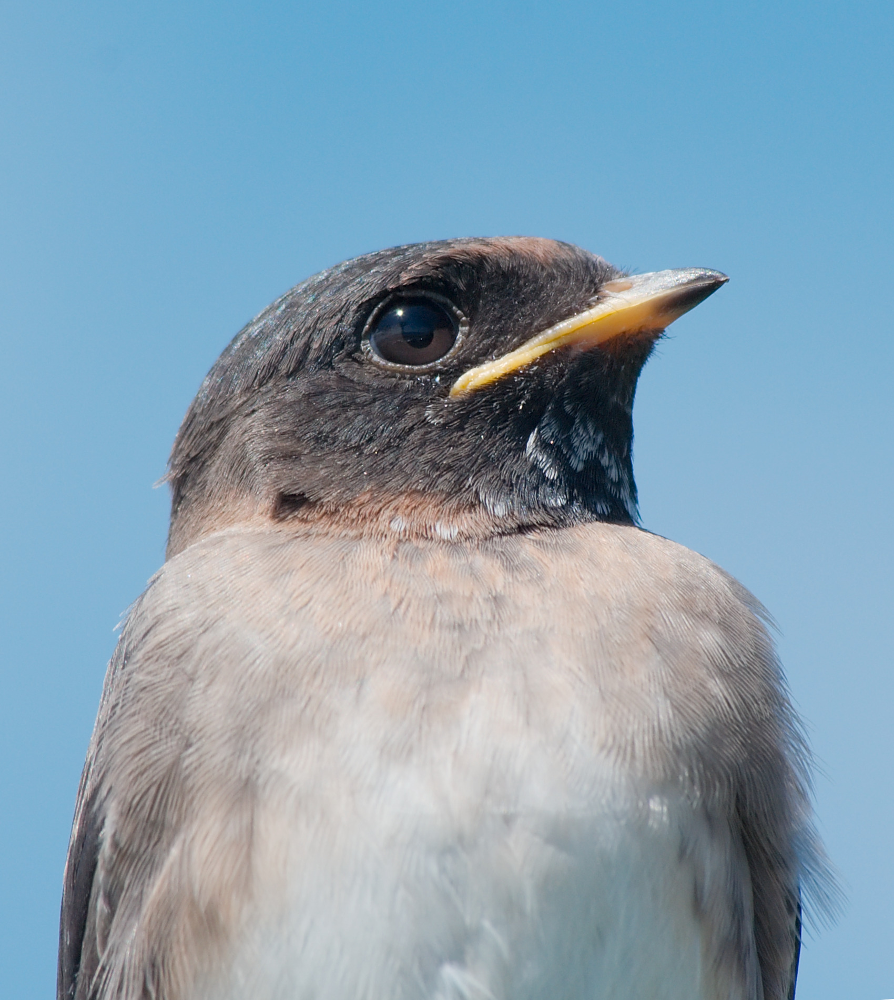
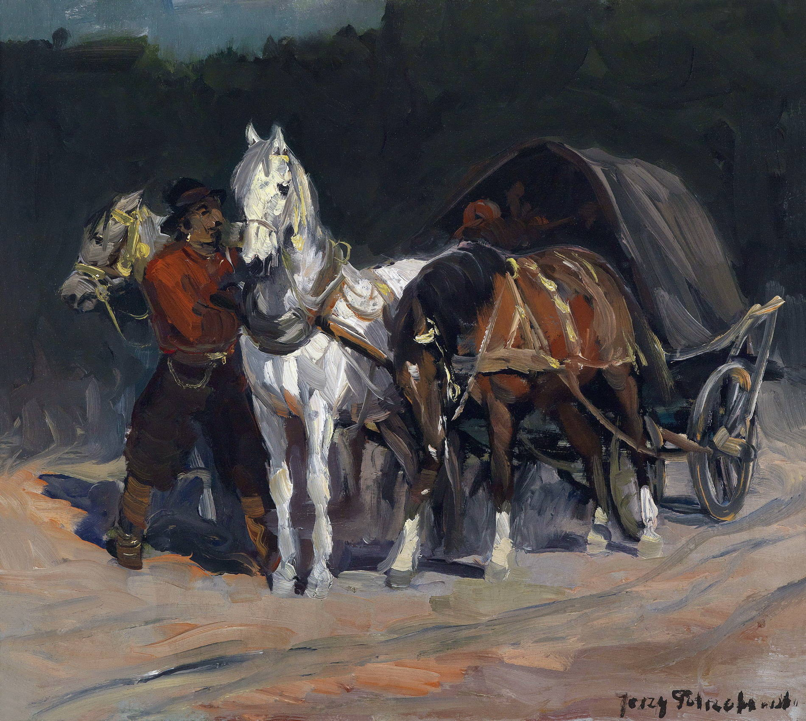
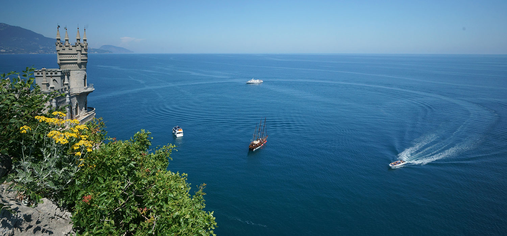

Главная
"Название сервиса" - это сервир, позволяющий воссоздать картину поездки, туристического похода, просто прогулки, если у вас шла запись gps-маршрута. Вы можете загрузить gps-трек (в формате .gpx), и сайт прогрузит его на карту Яндекс. Добавив фотографии к этому треку - создастся галерея этого маршрута. В добавок, если у фотографий есть геометки, то они отображатся на карте в правильных местах.


